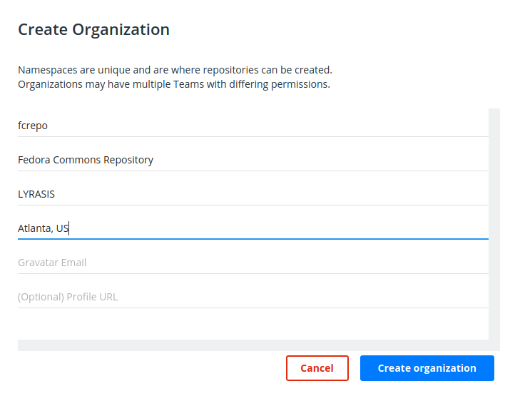

Danny Bernstein This issue has been resolved quite some time ago, right?
FCREPO-3194 Setup docker hub
| Type | New Feature |
|---|---|
| Status | Closed |
| Resolution | Fixed |
| Priority | Minor |
| Reporter | Thomas Bernhart |
| Assignee | Thomas Bernhart |
| Created | 2020-01-30 16:23 UTC |
| Updated | 2022-09-29 15:34 UTC |
| Resolved | 2022-09-29 15:34 UTC |
| Required by | FCREPO-3193 Create a docker container |
Description
Tasks:
- create an organization
- create a repository for Fedora 6 on docker hub
Suggested organization name and details

Attachments
- Screenshot_20200130_191803.png, 28242 bytes, added by Thomas Bernhart on 2020-01-30
Comments (3)
Thomas Bernhart, 2021-04-23 13:35 UTC
Danny Bernstein, 2022-09-29 15:34 UTC
this is done.
As a temporary workaround the following repository was created on Docker Hub: https://hub.docker.com/r/docuteam/fcrepo